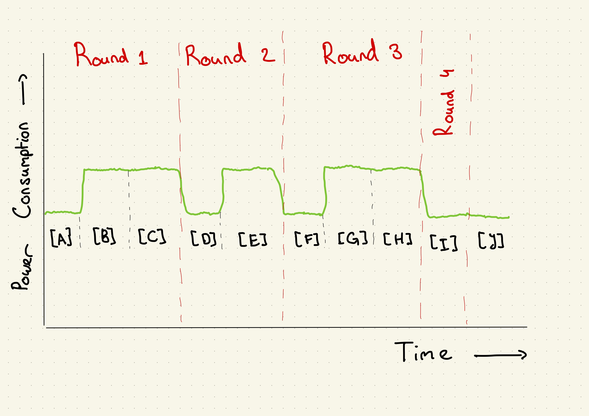
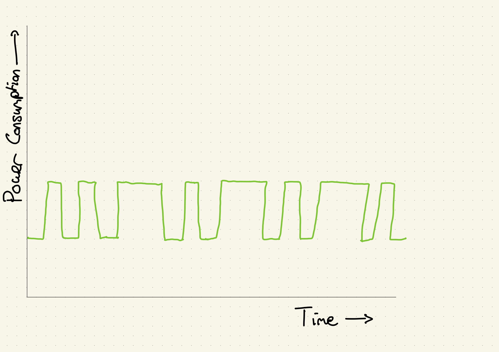

A deeper look at RSA
RSA is quite an simple algorithm, but to understand how and why we can crack RSA using power traces. It is important to understand the method RSA uses in quite some depth. In the chapter on AES, we will go a bit deeper into cache based side-channel attacks and why they work exactly, but here we will do a few assumptions to focus on the important bits.
What is RSA?
RSA is used to do asymmetric encryption. This means we have two keys. Most of the time this means we have one to encrypt plain text to cipher text, one to decrypt cipher text back to plain text. It is common to have one of these keys be public and the other be private and secret. Thus, they might also be called to the public and private key.
RSA uses one simple principle. For encryption with public key \( e \), for every byte of our plain text \(b_i\) we have encrypted byte \( c_i=b_i^e \) modulo some integer \( N \). For decryption with private key \( d \), for every byte of our cipher text \(c_i\) we have encrypted byte \( b_i=c_i^d \) modulo some integer \( N \). The relationship between these numbers is not as important for now.
One might wonder how these computations are actually done on the bare hardware. It turns out that we can interpret this as repeated multiplication and squaring. This is how that works.
If we are given a number \( x \) and we are tasked with the raising it to the 13th power, we might to it as follows:
\[ x^{13} = x^8 \cdot x^4 \cdot x^1 \]
Noticing the clear ties with powers of 2 here — and thus with binary —, we might write a custom power function in python as the following.
# Custom implementation of pow(x, y)
def custom_pow(x, y):
res = 1
# Until we have reached the highest power
while (y > 0):
# If the last byte is a one
if (y & 0x01):
res *= x
# Move on to the next byte
y >>= 1
x *= x
return res
If we add a modulo into our function, we have essentially created a function to do RSA encryption. This is also often how the pseudocode for lower level implementation looks like.
# Custom implementation of pow(x, y) % p
# With p >= 2
def custom_pow_mod(x, y, p):
res = 1
# Until we have reached the highest power
while (y > 0):
# If the last byte is a one
if (y & 0x01):
res *= x
res %= p # Make sure we stay modulo p
# Move on to the next byte
y >>= 1
x *= x
x %= p # Make sure we stay modulo p
return res
If you are already a small bit familiar with Side-Channel Analysis and Power Analysis, you might immediately see what is going wrong here. If not let us go through it together.
When we do Power Analysis, we get the power consumption of a computer for a
set time. Let us say we would we have a computer purely executing the
computation for custom_pow_mod(3, 5, 15). The steps that are taken in this
computation are done noted below. Take a look at that the computation and
verify it in your head.
custom_pow_mod(3, 5, 15):
res := 1
# Round 1
# [A]
y > 0 = 5 > 0 is true, thus:
y & 0x01 = 5 & 0x01 is 1, which equals true, thus:
# [B]
res := res * x = 1 * 5 = 5
res := res % 15 = 5 % 15 = 5
# [C]
y := y >> 1 = 5 >> 1 = 2
x := x * x = 3 * 3 = 9
x := x % 15 = 9 % 15 = 9
# Round 2
# [D]
y > 0 = 2 > 0 is true, thus:
y & 0x01 = 2 & 0x01 is 0, which equals false
# [E]
y := y >> 1 = 2 >> 1 = 1
x := x * x = 9 * 9 = 81
x := x % 15 = 81 % 15 = 6
# Round 3
# [F]
y > 0 = 1 > 0 is true, thus:
y & 0x01 = 1 & 0x01 is 1, which equals true, thus:
# [G]
res := res * x = 5 * 6 = 30
res := res % 15 = 30 % 15 = 0
# [H]
y := y >> 1 = 1 >> 1 = 0
x := x * x = 6 * 6 = 36
x := x % 15 = 36 % 15 = 6
# Round 4
# [I]
y > 0 = 0 > 0 is false.
# [J]
Result: 0
One might notice that every round contains a differing amount of steps, and thus, we might imagine that the power consumption of our machine looks similar to Figure 1.

Figure 1: A projected power trace for the custom_pow_mod(3, 5, 15) function call.
NOTE: This sketch uses the estimate that conditionals and loops (
ifandwhile) are less power consuming than normal numerical calculations (>>,*and%), which isn't trivially necessarily true, but for the sake of argument we are going to assume it is true.
You might notice that given this sketch, we can reconstruct some information
about the argument y provided to the custom_pow_mod function. We start with
a long spike, thus, the binary number representation of y starts with a 1.
This is followed by a short spike, which indicates a 0. And lastly, we see a
long spike again. Therefore, we end with an 1. And we get the binary number
101 for our y. This equals 5 in decimal, which is correct.
Let us do another one, now without knowing the answer before hand. Take a look at Figure 2.

Figure 2: A projected power trace for the custom_pow_mod function.
We start with two short spikes, and thus we start with two zeros. Then we
alternate a long spike with a short spike three times. This means we get
00101010. This is equal to decimal 42. And thus the y we started with is 42.
What does this tell us?
The previous code example may seem cherry picked. In fact, it is. It indicates this concept very nicely and is therefore an extremely good visual example of how to break a RSA implementation. However, code following the same principle or even this exact algorithm is extremely common. This means that whilst this exact method may not be applicable everywhere, the underlaying idea still is.
So whilst this method specifically is interesting, we are more interested in looking into an algorithm and seeing if we can tell something about data used from the patterns in a power trace. Specifically for this chapter for (part of) the RSA encryption algorithm.